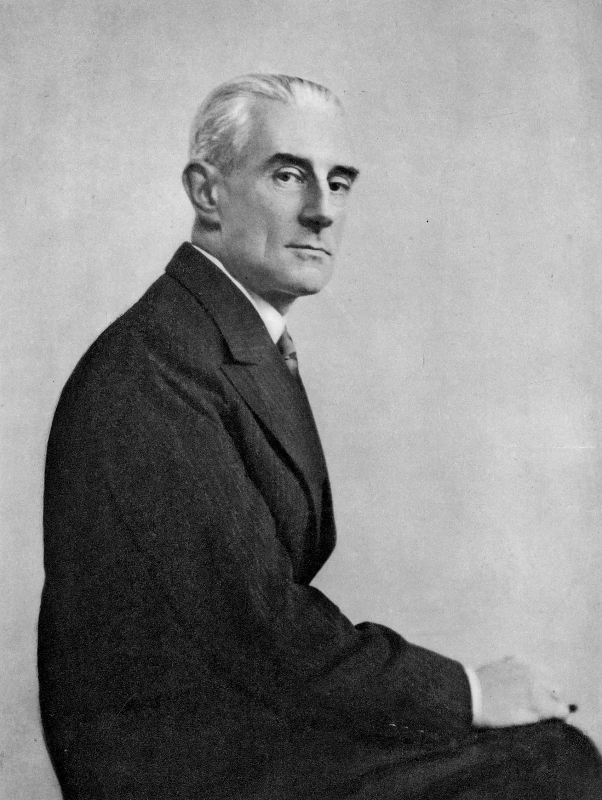

Ravel's Daphnis et Chloé
January 13-15: Fri-Sat @ 7:30, Sun @ 1:00
Be still my heart! A whirling celebration of pagan love awaits listeners with Ravel's Daphnis et Chloé, which he called a “symphonie chorégraphique” rather than a ballet, reflecting a sense of powerful, dramatic music which defies category and springs to life on terms all its own. Ravel's exceptional score creates a sensuous atmosphere with a lingering explosiveness residing just underneath the surface. Scored for a massive orchestra and utilizing the ethereal, intangible tones of a wordless chorus, Ravel often spotlights solo players in a way that recalls chamber music rather than merely using it as a show of force, pulling listeners into a vast, visceral dreamscape of shimmering colors and hypnotic motion. Szymanowski's First Violin Concerto will shine in the hands of Concertmaster Yumi Hwang-Williams, who brings expressive virtuosity to one of the first violin concertos of the modern era. The program opens with Lili Boulanger's D'un matin de printemps, meaning 'On a spring morning,'' capturing the genius of this prodigious composer who wrote over 50 compositions before tragically passing at the age of just 24. This sweet and playful ode to spring is just the transportive overture to carry away your winter doldrums.
Featured Artists
Kevin John Edusei, conductor
Yumi Hwang-Williams, violin
Colorado Symphony Chorus, Duain Wolfe, director
Repertoire
BOULANGER D'un matin de printemps
SZYMANOWSKI Violin Concerto No. 1, Op. 35
RAVEL Daphnis et Chloé